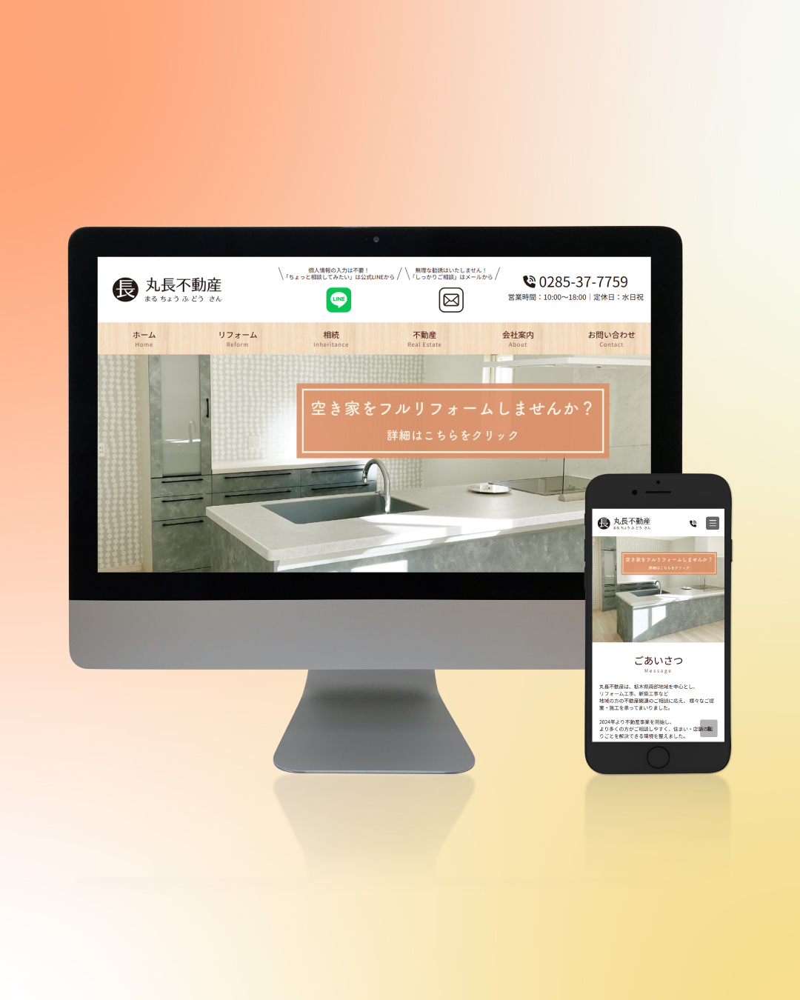
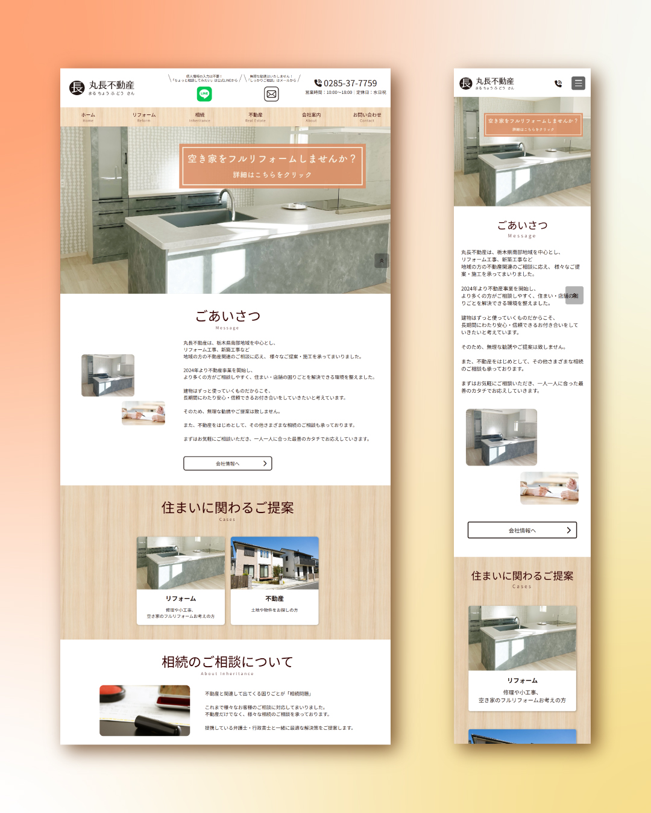

2枚中1枚目
Webサイト

リフォーム会社 Webサイト
リフォーム会社のサービスを紹介するWebサイトを制作しました。施工写真を大きく見せ、住まいのイメージや事業内容が伝わるトップページにしています。
サービスの説明や施工事例、相談につながる案内を整理し、初めて訪れた方にも内容を理解しやすい構成を目指しました。PC・スマートフォンで写真や文章が自然に読み進められるよう、配置と余白を調整しています。
作ったもの一覧に戻る